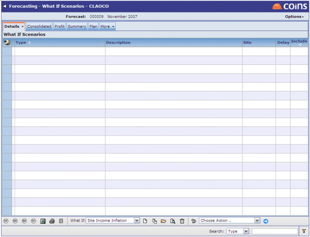

What If scenarios are an optional list of potential happenings that can have an impact upon the data in a forecast. The types of scenario that can be applied are fixed, but for each it is possible to specify the timing and rate of the impact they model. Each can be applied to be forecast more than once.

The available types are:
| What If | Description |
|---|---|
| Actual Site Delay | Enables the user to apply a specified delay (in months) to a particular |
| Additional Item Inflation | Allows inflation to be applied to one or more additional items within the forecast. The rate of inflation is set using What If Rates. |
| Enables the user to apply a specified delay (in months) to a particular |
|
| Allows inflation to be applied to one or more The rate of inflation is set using What If Rates. |
|
| Interest Rate Change | Allows the rate of interest used for finance calculations within the forecast to be changed. The rate of interest is set using What If Rates. |
| Model Site Delay | Enables the user to apply a specified delay (in months) to a particular |
| Site Cost Inflation | Allows inflation to be applied to the income from The rate of inflation is set using What If Rates. |
| Site Income Inflation | Allows inflation to be applied to the costs for The rate of inflation is set using What If Rates. |
Against each What If there is a flag, Include in Calculation, that determines whether or not that particular scenario will be applied to the forecast when the values are recalculated to take into account What Ifs. This can also be set for more than one scenario at once using an action (at the bottom of the screen).
The rates for changes to inflation and interest are set using the What If Rates screen once that particular What If scenario has been selected for inclusion in the forecast. For each item requiring a rate there is an option against the scenario that determines whether or not the rate is annual